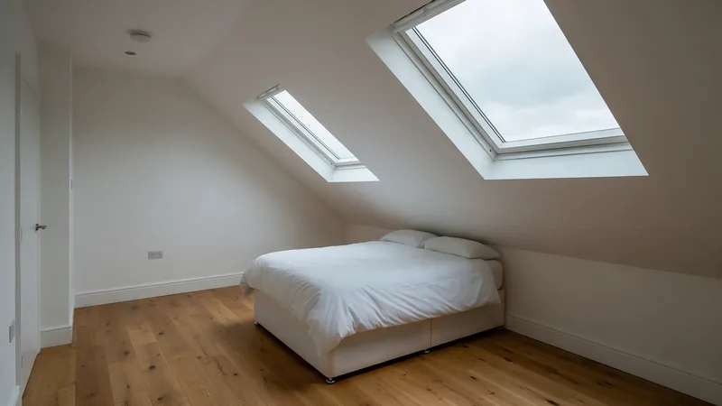
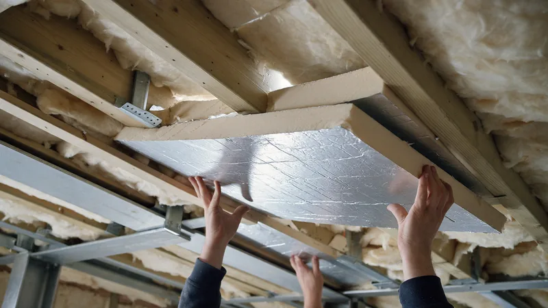

When it is the right answer
If your roof has the height and the pitch to give you a room without changing its shape, a rooflight conversion is almost always the better job. Nothing goes up outside except a small tower for the windows. There is no planning question on a rear slope in most places. It is weeks rather than months, and the saving against a dormer is not small.
The test is not the height at the ridge. It is how far out from the ridge the ceiling stays above your head, which is the pitch doing the work. There is a drawing of exactly that further down this page, and it is the first thing we measure.
What you are giving up
Every ceiling in the room is a slope. That is fine for a bedroom, very good for a study with the desk under the window, and awkward for anything that needs a wall: a wardrobe, a basin, a bookcase. You can build the storage into the low parts and that works well, but it is bespoke joinery rather than something bought flat packed.
The other thing is that daylight comes from above rather than from in front of you. People are often surprised by how much light a rooflight gives, because the sky is brighter than anything at eye level. What they notice later is that you cannot stand and look out of one, unless it is set low enough in the slope to see through sitting or standing, and that is worth deciding on the drawings rather than on the day.
Insulation is most of the job
With no dormer to build, the work that decides whether the room is any good is the envelope. Insulation goes between the rafters and then a second layer under them, which is what stops every rafter being a cold stripe across the ceiling. Above the insulation an air gap is left clear from the eaves to the ridge so the roof can breathe, and blocking it is how a conversion ends up with damp timber in five years.
The catch is depth. Insulating properly takes thickness, and thickness comes off your head height. On a tight roof that is a real decision, and the answer is a better performing board rather than a thinner lot of a cheaper one.

Generated photoGenerated for this demo. Not a photograph of a real job.

Generated photoTwo layers and an air gap above them. On a rooflight conversion the insulation is where most of the thinking goes.
In section
What the pitch does to the room.
Two roofs over the same floor, with the standing line at the same height in both. It is the pitch, not the number at the ridge, that decides how much of the floor is a room.
Same floor · same standing line · shallower pitch
Height at the ridge is not the number that counts
Plenty of lofts measure well at the ridge and still give you a narrow strip of room with a sloping cupboard either side of it. The ceiling falls away from the ridge at the pitch of the roof, so on a shallow roof it runs out of height a short way out from the middle. That is the number that decides what you get, and it is the one nobody measures from the hatch.
Same floor · same standing line · steeper pitch
The same house, and nearly all of it is a room
Steeper pitch, same footprint, and the shaded part runs most of the way out to the eaves. The bit at each side that is too low never goes to waste either: it is where the wardrobes, the drawers and the eaves cupboards go, so the useful floor is wider again than the part you can stand up in.
Drawn in the browser and set out from the pitch rather than sketched. No measurement on either one, because yours depends on your roof and we would rather come and take it.
On the job
How this one usually goes.
- Up there with a tapeHeight in the middle and at both ends, and how far out from the ridge the height holds. What is holding the roof up. Where the stairs can come. Half an hour.
- Drawings, engineer, applicationDrawings, the structural engineer on the new floor, and the building control application. Usually no planning application on a rear slope, and we confirm that for your address.
- New floorNew joists spanning across to the walls, over the top of your old ceiling joists and not touching them. Deck down, and the loft becomes a place you can work.
- Openings for the windowsA small scaffold tower, the slope opened for each rooflight, the timbers trimmed, the window in and the flashing kit dressed into the slate. Each one is a day or so.
- Insulation and the air gapBoards between the rafters with the gap left clear above them, then a second layer underneath. The part that decides whether the room is usable in February.
- Stairs and lining outStair opening cut, flight in, plasterboard and skim, and the eaves cupboards framed where the ceiling is too low to stand.
- Second fix, alarms, sign offElectrics and the mains linked alarms, doors, skirting, decorating, and the building control sign off paperwork.
A sample running order for this demo. Yours depends on the house and on what the drawings come back saying.
Questions
Asked about this job.
How many rooflights do I need?
More than you think, and they are the cheapest part of the whole job. Two in a single room is normal and three is not extravagant, because a rooflight lights the patch under it rather than the whole room.
Where they go matters as much as how many. One over the desk or the bed, one that puts light down the stair opening so you are not walking up into a dark space, and one in the gable end if you have one, because a window you can see out of at eye level changes how the room feels more than any amount of light from above.
Can I have one I can see out of?
Yes, if it is decided early. Set a rooflight low enough in the slope and you can see out of it stood up, which makes a genuine difference to the room. Set it high and you get light and sky and nothing else.
On a steep roof you can have both: one low for the view, one high for the light. On a shallow roof a low window starts to clash with the standing area and it becomes a choice. It is a thirty second conversation at the drawing stage and it is hard to change afterwards.
Do they leak?
A properly fitted one does not, and the flashing kit is the reason. It is a set of lead and metal pieces made for that window and that roof covering, dressed into the slate so water runs round and past the window rather than at it. Fitted right, it is one of the more reliable details on a roof.
What leaks is an old one with perished seals, a window fitted without the right kit, or one fitted into a roof covering it was never made for. If an existing one in your loft has a stain under it, say so, because it changes the first visit.
Is it much cheaper than a dormer?
Meaningfully, and we will not put a figure on it here because this is a demo site and any figure would be invented. The saving is in the things a rooflight conversion does not need: a full scaffold for weeks, the roof opened up, the structure over the opening, the cladding and the flat roof.
What it does not save on is the floor, the stairs, the insulation, the plastering, the electrics and the sign off, which is most of the inside work. So the difference is real but it is not half.
Will the room be hot in summer?
It can be, and a loft room with a lot of glass facing south will be hotter than the rest of the house. That is worth designing for rather than discovering.
Three things fix most of it: a blind on the rooflight, which is the one everybody does; two windows rather than one so air can move through; and insulation that is genuinely good, because the same layer that holds heat in holds it out. Ask about this at the drawing stage and it costs nothing to sort.
General trade knowledge written for this demo, not advice on your property.
Our work
Sample jobs like this.
 Generated photoNew floor in, roof still openHolmfirth · Sample
Generated photoNew floor in, roof still openHolmfirth · Sample Generated photoA desk under the slopeKirkburton · SampleGenerated photoTwo layers and an air gapKirkburton · Sample
Generated photoA desk under the slopeKirkburton · SampleGenerated photoTwo layers and an air gapKirkburton · SampleMade up samples with generated pictures. Tap one for the detail.
Also
The other things we do.
Dormer loft conversions
A box built out of the back slope, so the ceiling goes flat and the room has a wall you can stand a wardrobe against instead of a slope you keep ducking under.
More →Hip to gable conversions
For the semi or the end terrace where the roof slopes in at the side and the loft runs out to a point. The end wall gets built up square and the pointed bit becomes room.
More →Loft bedrooms with en suites
A bedroom with its own shower room, laid out so the shower and the basin sit where the ceiling is highest and the bed goes under the slope, which is the only way the room works.
More →Loft boarding and storage
Not a conversion. Boards on raised legs above the insulation so the insulation still works, a hatch you can get through and a light that comes on. The job most people want first.
More →Staircase design for lofts
Where the flight goes, which way it turns and what it takes off the floor below. Decided first, on paper, because everything else in the loft follows it.
More →Shall somebody come up and look?
Tell us the house and your postcode. Half an hour with a tape in the loft and on the landing tells us more than any photograph.